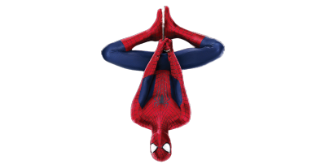

You cannot improve your past, but you can improve your future. Once time is wasted, life is wasted.
你不能改变你的过去，但你可以让你的未来变得更美好。一旦时间浪费了，生命就浪费了。
博客主站
-
博客副站
-
奇迹秀
-
蝌蚪聊天室
欢迎访问神秘的小王博客导航页
Theme by BridgeDeck